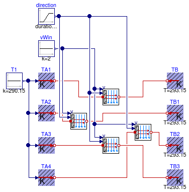
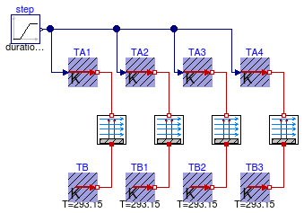

Collection of models that illustrate model use and test models
Information
This package contains examples for the use of models that can be found in
Buildings.HeatTransfer.Convection.
Extends from Modelica.Icons.ExamplesPackage (Icon for packages containing runnable examples).
Package Content
| Name |
Description |
 Exterior Exterior
|
Test model for exterior heat transfer coefficients |
| Interior
|
Test model for convective heat transfer coefficients |
Test model for exterior heat transfer coefficients

Information
This example tests the convective heat transfer models for exterior surfaces.
From t=0...3600 seconds, the wind traverses from North to West to South to East and back to
North. The plot shows the influence of the wind direction on the forced convection
coefficient for wall surfaces that face North, West, East and South.
Extends from Modelica.Icons.Example (Icon for runnable examples).
Modelica definition
model Exterior
"Test model for exterior heat transfer coefficients"
extends Modelica.Icons.Example;
Modelica.Blocks.Sources.Constant T1(k=290.15);
Buildings.HeatTransfer.Sources.FixedTemperature TB(T=293.15);
Buildings.HeatTransfer.Convection.Exterior nor(
A=1,
azi=Buildings.Types.Azimuth.N,
til=Buildings.Types.Tilt.Wall,
conMod=Buildings.HeatTransfer.Types.ExteriorConvection.TemperatureWind)
"North-facing wall";
Buildings.HeatTransfer.Convection.Exterior wes(
A=1,
azi=Buildings.Types.Azimuth.W,
til=Buildings.Types.Tilt.Wall,
conMod=Buildings.HeatTransfer.Types.ExteriorConvection.TemperatureWind)
"West facing wall";
Buildings.HeatTransfer.Sources.PrescribedTemperature TA1;
Buildings.HeatTransfer.Sources.PrescribedTemperature TA2;
Buildings.HeatTransfer.Sources.PrescribedTemperature TA3;
Buildings.HeatTransfer.Sources.PrescribedTemperature TA4;
Buildings.HeatTransfer.Convection.Exterior sou(
A=1,
azi=Buildings.Types.Azimuth.S,
til=Buildings.Types.Tilt.Wall,
conMod=Buildings.HeatTransfer.Types.ExteriorConvection.TemperatureWind)
"South facing wall";
Buildings.HeatTransfer.Convection.Exterior eas(
A=1,
azi=Buildings.Types.Azimuth.E,
til=Buildings.Types.Tilt.Wall,
conMod=Buildings.HeatTransfer.Types.ExteriorConvection.TemperatureWind)
"East facing wall";
Buildings.HeatTransfer.Sources.FixedTemperature TB1(T=293.15);
Buildings.HeatTransfer.Sources.FixedTemperature TB2(T=293.15);
Buildings.HeatTransfer.Sources.FixedTemperature TB3(T=293.15);
Modelica.Blocks.Sources.Ramp direction(duration=3600, height=2*3.14159)
"Wind direction (0=from north)";
Modelica.Blocks.Sources.Constant vWin(k=2)
"Wind speed";
equation
connect(T1.y, TA4.T);
connect(T1.y, TA3.T);
connect(T1.y, TA2.T);
connect(T1.y, TA1.T);
connect(TA1.port, nor.solid);
connect(TA2.port, wes.solid);
connect(TA3.port, sou.solid);
connect(TA4.port, eas.solid);
connect(nor.fluid, TB.port);
connect(wes.fluid, TB1.port);
connect(eas.fluid, TB2.port);
connect(sou.fluid, TB3.port);
connect(vWin.y, wes.v);
connect(vWin.y, nor.v);
connect(vWin.y, eas.v);
connect(vWin.y, sou.v);
connect(direction.y, nor.dir);
connect(direction.y, sou.dir);
connect(direction.y, wes.dir);
connect(direction.y, eas.dir);
end Exterior;
Test model for convective heat transfer coefficients

Information
This example tests the convective heat transfer models.
Extends from Modelica.Icons.Example (Icon for runnable examples).
Modelica definition
model Interior
"Test model for convective heat transfer coefficients"
extends Modelica.Icons.Example;
Modelica.Blocks.Sources.Ramp step(
duration=1,
startTime=0,
height=10,
offset=293.15 - 5);
Buildings.HeatTransfer.Sources.FixedTemperature TB(T=293.15);
Buildings.HeatTransfer.Convection.Interior conCon(
A=1,
til=Buildings.Types.Tilt.Wall);
Buildings.HeatTransfer.Convection.Interior conVer(
A=1,
til=Buildings.Types.Tilt.Wall,
conMod=Buildings.HeatTransfer.Types.InteriorConvection.Temperature);
Buildings.HeatTransfer.Sources.PrescribedTemperature TA1;
Buildings.HeatTransfer.Sources.PrescribedTemperature TA2;
Buildings.HeatTransfer.Sources.PrescribedTemperature TA3;
Buildings.HeatTransfer.Sources.PrescribedTemperature TA4;
Buildings.HeatTransfer.Convection.Interior conHorFluTop(
A=1,
til=Buildings.Types.Tilt.Floor,
conMod=Buildings.HeatTransfer.Types.InteriorConvection.Temperature)
"Convection model with fluid on top";
Buildings.HeatTransfer.Convection.Interior conHorSolTop(
A=1,
til=Buildings.Types.Tilt.Ceiling,
conMod=Buildings.HeatTransfer.Types.InteriorConvection.Temperature)
"Convection model with solid on top";
Buildings.HeatTransfer.Sources.FixedTemperature TB1(T=293.15);
Buildings.HeatTransfer.Sources.FixedTemperature TB2(T=293.15);
Buildings.HeatTransfer.Sources.FixedTemperature TB3(T=293.15);
equation
connect(conCon.solid, TB.port);
connect(step.y, TA4.T);
connect(step.y, TA3.T);
connect(step.y, TA2.T);
connect(step.y, TA1.T);
connect(TA1.port, conCon.fluid);
connect(TA2.port, conVer.fluid);
connect(TA3.port, conHorFluTop.fluid);
connect(TA4.port, conHorSolTop.fluid);
connect(TB1.port, conVer.solid);
connect(TB2.port, conHorFluTop.solid);
connect(TB3.port, conHorSolTop.solid);
end Interior;
Automatically generated Mon Jul 13 14:26:33 2015.
 Buildings.HeatTransfer.Convection.Examples.Exterior
Buildings.HeatTransfer.Convection.Examples.Exterior